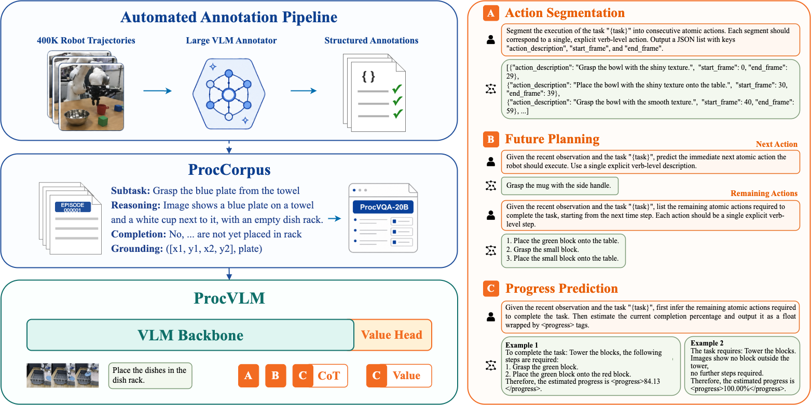

Paper Reading · Robotics Reward Models
ProcVLM：用 procedure-grounded progress 给机器人密集奖励
这篇论文不是提出一个新 policy，而是做了一个 进度奖励模型： 先把长程操作拆成 subtask procedure，再让 VLM 先推理剩余动作，最后输出连续进度分数。 核心价值是把奖励从“时间越晚越接近成功”改成“当前状态在任务流程里真的推进了多少”。
0. 一句话结论
痛点：长程机器人操作需要 dense reward，但常见 reward model 依赖终局成功、偏好比较或按时间插值，容易把“卡住很久”误判成“进度变高”。 核心招：ProcVLM 先用大型 VLM 给 40 万条轨迹合成 subtask、完成状态、剩余动作等 procedure annotation， 再训练一个 Qwen3-VL-2B 系的模型，让它在预测进度前先推理剩余 atomic actions，并用 value head 回归连续 progress。 效果：它在 procedure VQA、zero-shot/one-shot reward evaluation、RFT policy tuning 上都比代表性基线更稳，真机 stack-bowls 的 RFT 早期成功率提升更明显。 代价：它把难点转移到自动标注质量、subtask 边界、progress calibration 和跨环境 one-shot 适配上，不是一个直接替换 policy 的端到端控制器。
- 核心 insight
- Progress 不应该是 timestep 的函数，而应该是 procedure state 的函数：已完成哪些子步骤、当前卡在哪一步、还剩哪些 atomic actions、视觉状态有没有在这一步内真正变化。
- 它到底是 system 还是 model
- 两者都是。论文贡献是一个数据合成 system，加一个 ProcVLM-2B reward model，再展示它如何接到 Evo-RL / advantage-conditioned fine-tuning。
- 对 FastWAM 的启发
- 如果要把一次 task execution 当 one-shot 样本，最有用的 supervision 不是原始 action，而是可更新的 progress state：stage、remaining actions、completion score、stall/failure signal。
1. 论文定位
ProcVLM 属于 robot reward model / task progress model，不是 VLA policy architecture。 它解决的是：给定当前观察窗口和任务文本，估计机器人任务完成百分比，并把这个分数当作 dense reward 或 reward-guided fine-tuning 的信号。
和主流路线的关键差异是 procedure grounding。它不把 progress 近似成 \(t/T\)，也不只训练“成功/失败”分类器。 它先合成 subtask structure，再把进度预算分配到每个 subtask，最后用视觉变化决定该 subtask 内的局部推进。
| 路线 | 监督信号 | 主要问题 | ProcVLM 的差异 |
|---|---|---|---|
| Terminal success classifier | 整条轨迹是否成功 | 太稀疏，不能区分中间状态 | 输出每个 frame/window 的连续 progress |
| Time interpolation | 用时间或 episode index 当进度 | 重试、卡住、失败恢复会被误标 | 进度由 subtask 边界和视觉变化共同定义 |
| Preference reward | 轨迹比较或 before-after 对比 | 能排序，但缺少显式 procedure 解释 | 先推理剩余动作，再估计 progress |
| VLM-as-judge | 大 VLM 直接打分 | 成本高，数值校准差，容易只看语义表面 | 蒸馏到 ProcVLM-2B，并加连续 value head |
2. 方法总览
这篇方法可以理解成三层：先做 procedure annotation，再把 annotation 转成 VQA 训练集，最后训练一个既能说出流程、又能回归进度的 VLM。

raw robot trajectories
-> dataset reader / async prefetch / sparse sampling
-> large VLM annotator
video-level task plan
subtask segments
keyframe reasoning
completion status
remaining actions
optional target grounding
-> ProcCorpus-60M
~412K trajectories, ~60.5M raw frames, ~58.5M annotated frames
-> ProcVQA
action segmentation
next-step / remaining-action planning
subtask-structured progress prediction
-> ProcVLM-2B
Qwen3-VL-2B-Instruct backbone
language modeling head for reasoning text
attention-pooling value head for continuous progress
-> dense progress rewards
reward evaluation
one-shot LoRA adaptation
Evo-RL advantage-conditioned policy fine-tuning关键符号按下面理解就够了： 一条轨迹长度为 \(T\)，有效 subtasks 数为 \(K\)，时刻 \(t\) 所在子任务为 \(k(t)\)，第 \(k\) 个子任务跨度为 \([s_k,e_k]\)。 视觉表征是 \(\phi(o_t)\)，progress target 是 \(p(t)\in[0,1]\)，文本输出里写成百分比。
3. 关键创新点
创新点 1：procedure-defined progress target
旧方法为什么不行：长程操作不是匀速推进。抓取可能反复尝试，放置可能一步完成，开抽屉可能先失败再恢复。 如果用 \(t/T\) 当 label，模型会学到“时间晚就是好”，而不是“任务推进了”。
它怎么改：ProcVLM 先给每个 subtask 一个全局 progress budget，再用该 subtask 内的视觉变化分配局部进度。 这样每个阶段都占有任务进度的一部分，但不会因为某一步耗时异常长而独占全部奖励。
为什么会有效：\(w\) 是 stage-level budget，约束每个 subtask 对总进度的贡献； \(r\) 是 within-stage visual-change rate，决定该阶段内部哪一帧真的有变化。 这比时间插值更能处理 stagnation，因为视觉不动且 subtask 不变时，progress 增长会很弱。
实现细节：官方代码的 evqa/tools/functions/progress.py 会先按 sub_task 字段切段，
跳过 Done / Not Done 这类非有效子任务，再按论文里的 clipped budget 算 \(dp\)。
视觉变化的轻量实现不是跑一个大 encoder，而是用相邻帧 perceptual hash similarity 近似 \(\Delta\phi\)。
代价/限制：这个 label 的上限取决于 subtask 标注质量。如果大型 VLM 把边界切错，progress target 会系统性偏；如果视觉变化和真实任务进展不一致，例如手挡住关键物体，\(r\) 也会偏。
创新点 2：reasoning-before-estimation
旧方法为什么不行：直接输出一个数字容易变成视觉表面拟合：物体移动了就加分，画面相似就低分。 但同一个视觉变化在不同 task 里含义不同，把碗拿起来可能是 stack bowls 的早期进展，也可能是 put-away 任务的中间状态。
它怎么改：progress prediction 的 prompt 要求模型先列出剩余 atomic actions，然后再输出
<progress>p%</progress>。这让标量预测绑定到 procedure reasoning，而不是孤立数值回归。
Input:
recent observation window + task instruction
Target response:
remaining atomic actions:
1. ...
2. ...
therefore estimated progress:
<progress>84.13%</progress>为什么会有效：剩余动作是一个离散的 bottleneck。模型必须判断“当前处在哪个 stage”和“还缺什么”， 之后的百分比才有语义坐标。论文消融显示，去掉 reasoning-formatted supervision 后，RoboFAC one-shot 的 VOC、MAEfail、MCC 都下降。
代价/限制：推理时生成较长文本会增加 latency；如果模型 hallucinate 了剩余步骤，value head 也会被错误 reasoning 牵引。
创新点 3：语言头和连续 value head 分工
旧方法为什么不行：让 LLM 纯靠 token 输出数字，常见问题是数值锚点化：喜欢输出 0、50、80、100 这类粗粒度数字，连续校准差。
它怎么改：ProcVLM 保留 autoregressive LM head 生成 reasoning 文本，同时在 shared hidden states 上接一个 attention-pooling value head，专门回归 normalized progress。
实现细节：evqa/model.py 里的 AttentionPooling 是两层 MLP 打分，
ProcVLMWithValueHead 的 value head 是 \(d_h\rightarrow4d_h\rightarrow d_h\rightarrow1\) 的三层 MLP。
对 Qwen3-VL-2B 的 hidden size，代码注释估计这个 head 约 20M 参数。
代价/限制：需要把 ProcVLM-specific head 和基础 Qwen 权重分开保存。官方代码有 tools/convert_procvlm_legacy_checkpoint.py，
用来把旧 checkpoint 转成 vLLM-compatible 的 Qwen layout，并把 head 单独放到 procvlm_extra/procvlm_head.pt。
创新点 4：leakage-prevention tail dropout
旧方法为什么不行：训练时是 teacher forcing，ground-truth progress token 就在序列末尾。
如果 value head pooling 能直接读到 <progress>84.13%</progress> 附近的 hidden states，它可能学会抄答案，而不是看图估计进度。
它怎么改：训练时对最后 \(N_{tail}=14\) 个 token 的 hidden features 做 50% dropout，但不把这些 token 从 attention mask 里删掉。
为什么会有效：soft corruption 弱化了直接读答案的捷径，同时仍保留完整 response 的梯度流。 代码还会给 pooled representation 注入小高斯噪声，缓解 teacher forcing hidden state 和 autoregressive inference hidden state 的分布差。
代价/限制：tail 长度和 progress 模板绑定。如果模板变长、加入更多解释或 tokenizer 行为变化，\(N_{tail}=14\) 可能覆盖不全，需要重新检查。
4. 训练和推理流程
训练数据生成
- 把 DROID、BridgeData V2、Fractal、RH20T、Table30、OXE、LIBERO、RoboTwin、GR00T-Teleop-Sim 等数据转成统一轨迹读取格式。
- 大型 VLM 对完整视频生成 high-level task plan 和 subtask segments。
- 把 video-level segments 展开成 frame-wise subtask assignment。
- 对视觉去重后的 keyframes 生成 reasoning、completion status、remaining actions 和可选 grounding boxes。
- 得到 ProcCorpus-60M，再转成 ProcVQA 的多任务 QA 样本。
论文统计：ProcCorpus 包含 412,404 条 real/sim 轨迹、60,466,354 raw frames、58,531,267 subtask-annotated frames，整体 annotation rate 为 96.80%。 第一阶段 ProcVQA 大约 20B tokens；第二阶段 refinement 用人工筛选的约 15K trajectories，论文表里是 13,688 条、2.8B tokens。
ProcVLM 训练
输入是图像或多帧 observation window 加任务文本。输出分两路： LM head 生成 action segmentation、future planning 或 progress reasoning 文本； value head 只在包含 progress supervision 的样本上计算回归 loss。
复现时最重要的超参来自论文 Table 9：bf16、context length 8192、data packing enabled、per-device batch size 1、gradient accumulation 64、 AdamW、cosine schedule、weight decay 0.01。Stage 1 的 base LR 是 \(1\times10^{-5}\)，\(\lambda=0.2\)，value noise std 0.03； Stage 2 的 base LR 是 \(5\times10^{-6}\)，\(\lambda=0.3\)，value-head dropout 0.05，value noise std 0.01。
Progress reward inference
官方 README 的 inference 入口是 evqa/inference.py。
它从视频抽帧，最多均匀采样 512 帧；每个待评估 frame 用最近 window_size=8 帧构造多图输入；
输出 JSONL，每行包含 frame_index、progress、reasoning 和原始 model output。
python evqa/inference.py \
--model_path /path/to/model \
--video_path demo.mp4 \
--output_path progress.jsonl \
--task "fold the red T-shirt" \
--window_size 8
默认路径用 vLLM 当标准 Qwen-VL 做多图生成，再从文本里 parse <progress>。
如果打开 --enable_value_head，代码会再跑 value head，用连续预测替换生成文本里的 progress tag。
下游 policy fine-tuning
论文把 ProcVLM 接到 SJTU Evo-RL：ProcVLM 给训练轨迹打 dense progress score，Evo-RL 在 50-step horizon 内估 advantage。 每个任务中 top 30% advantage samples 标为 positive，其余标为 negative，再作为 auxiliary condition 做 reward-guided fine-tuning。 这个下游部分的重点是数据筛选和 advantage conditioning，不是把 ProcVLM 直接作为在线控制 policy。
5. 公式和算法逐项讲解
公式 1：procedure progress
离散实现里就是累计 \(dp_\tau=w_\tau r_\tau\)。如果第 \(k\) 个 subtask 视觉变化集中在某几帧，这几帧会吃掉该阶段的大部分 progress； 如果机器人在同一个 subtask 内抖动但画面几乎不变，progress 增长会很慢。
公式 2：subtask budget clipping
\(K(e_k-s_k)/T\) 可以看成“相对均匀 subtask prior 的时长比例”。 clip 到 \([0.75,1.25]\) 是保守设计：长阶段可以多一点预算，但不能无限多；短阶段也不能被压到几乎没有奖励。
公式 3：value-head pooling
这里的 \(h_i\) 是 Qwen3-VL 最后一层送入 LM head 前的 hidden state，shape 可理解为 \([B,L,H]\)。
attention mask \(m_i\) 排除 padding。实现为了省显存，不打开 output_hidden_states=True，而是在 lm_head 上注册 forward hook 抓最后 hidden states。
公式 4：联合训练目标
非 progress 样本只贡献 LM loss，但代码仍返回一个保持 value head 在计算图里的 zero loss，避免分布式训练时部分 rank 没有 value-head 梯度导致同步问题。 论文和代码默认 regression loss 是 L1。
算法 5：one-shot adaptation
collect one successful demo video
-> use annotator UI to split coarse subtasks
-> generate qa_pairs.jsonl
-> register dataset in evqa/data/__init__.py
-> run evqa/one-shot/lora_oneshot.sh
-> infer progress with --use_lora这部分很适合借到自己的项目。它不要求 dense per-frame action labels，只需要粗 subtask segments 和最终是否完成。 对新环境来说，这比重新训练一个 reward model 轻得多。
6. 训练与推理细节对齐
| 检查点 | 训练时 | 推理时 | 风险 |
|---|---|---|---|
| Progress 文本 | teacher forcing，ground-truth tag 在末尾 | 模型自回归生成 tag，或 value head 替换 tag | 如果不做 tail dropout，value head 会抄答案 |
| 视觉窗口 | 单帧或多帧 ProcVQA 样本 | README 推荐 recent window，默认 8 帧 | 窗口太短看不到阶段变化，太长增加显存和延迟 |
| Progress label | 由 subtask + visual change 自动合成 | 对真实视频逐帧预测 | 真实部署如果 task grammar 或 camera view 变了，需要 one-shot LoRA |
| 数值校准 | value loss 在 normalized \([0,1]\) 上算 | JSONL 写百分比 \([0,100]\) | 不同任务的 80% 不一定代表同等可完成性 |
| Downstream reward | ProcVLM 只学 progress，不学动作 | Evo-RL 用 progress score 估 advantage | reward shaping 可能偏向可见进展，忽略隐式准备动作 |
【不确定】release code 的 value loss 里使用 sigmoid(value_logits * 1.2 - 0.1) 做训练端校准，
但 _predict_progress_values 推理端直接用 sigmoid(value_head(...)) * 100。
合理猜测有三种：一是当前 checkpoint 已按直接 sigmoid 校准；二是训练端 affine 只是早期稳定技巧；三是 value-head replacement 默认关闭，所以主要评估仍来自文本 tag。
验证方式：对同一批 ProcVQA-OOD 样本同时记录文本 progress、value-head progress 和 ground truth，画 calibration curve。
【不确定】论文说局部视觉变化用 \(\|\dot\phi\|\) 近似，代码里公开的 progress.py 用 perceptual hash similarity。
合理猜测：pHash 是开源轻量实现，内部标注可能还测试过 learned visual features；也可能论文里的 \(\phi\) 泛指任意视觉表征。
验证方式：替换成 DINOv2 / SigLIP feature delta，比较 ProcVQA progress label 的平滑性和下游 reward 排序。
7. 实验复盘
ProcVQA procedure understanding
ProcVQA benchmark 覆盖 action segmentation、future planning、task progress estimation。 ID split 来自 DROID、Bridge、Table30、OXE 等训练域；OOD split 来自 unseen RoboTwin tasks。
| Split | Model | BF1@5↑ | Success↑ | VOC↑ | EPR@50↑ |
|---|---|---|---|---|---|
| ID | ProcVLM | 0.6924 | 0.8103 | 0.8058 | 5.7489 |
| OOD | ProcVLM | 0.5802 | 0.8448 | 0.7282 | 6.1152 |
结果说明 ProcVLM 在主要 procedure metrics 上强，但不是所有列都赢。论文也承认 mMAE 不是最低。 这点很重要：它的优势更像 procedure ordering 和 future-action reasoning，而不是纯边界定位。
Zero-shot reward model comparison
| ProcVQA-OOD | ProcVLM-2B | Robometer-4B | RoboDopamine-4B |
|---|---|---|---|
| VOC↑ | 0.7282 | 0.5296 | 0.7156 |
| EPR@50↑ | 6.1152 | 6.7212 | 4.5693 |
这里不能简单说 ProcVLM 全面赢。ProcVLM 的 VOC 最好，说明 trajectory-internal ordering 更强； Robometer 的 EPR@50 更高，说明它的回归头或评估适配在 top-50 progress retrieval 上更占优。 更准确的结论是：procedure grounding 提高了局部窗口乱序评估下的进度排序能力，但数值检索指标仍有竞争方法能超过它。
One-shot RoboFAC
| Setting | Model | VOCsucc↑ | MAEfail↓ | MCC↑ | Latency(s)↓ |
|---|---|---|---|---|---|
| Zero-shot | ProcVLM-2B | 0.4920 | 0.2001 | 0.6665 | 50 |
| 1-shot success | ProcVLM-2B | 0.9137 | 0.1241 | 0.7918 | 81 |
| 1-shot success + fail | ProcVLM-2B | 0.9301 | 0.1187 | 0.8053 | 80 |
这组结果和你的 one-shot task execution 需求最相关。 单条成功 demo 就能把 VOCsucc 从 0.4920 拉到 0.9137，同时 MAEfail 和 MCC 也变好。 这说明 ProcVLM 学到的不是“复读成功视频”，而是能把成功轨迹的 procedure structure 转移到失败和 retry execution 上。
Reward fine-tuning
| Setting | Steps | SFT | RFT | Gain |
|---|---|---|---|---|
| LIBERO-10 | 1000 | 73.2 | 73.6 | +0.4 |
| LIBERO-10 | 2000 | 72.8 | 74.0 | +1.2 |
| JAKA stack bowls | 5k | 37.5 | 62.5 | +25.0 |
| JAKA stack bowls | 10k | 70.8 | 83.3 | +12.5 |
仿真提升小，真机提升大。合理解释是：LIBERO 起点 policy 已强，数据噪声相对低； 真机遥操作数据里有重复抓取、局部震荡和无效动作，ProcVLM progress reward 更能筛掉低进展片段。
批判点也明确：下游 RFT 只覆盖有限设置，没有证明所有 RL / preference optimization 接法都有效； real robot 任务集中在 stack bowls，外推到更复杂接触、遮挡、工具使用任务仍需要验证。
8. 代码实现笔记
| 文件 | 作用 | 值得注意的点 |
|---|---|---|
evqa/model.py |
ProcVLMWithValueHead | 继承 Qwen3VLForConditionalGeneration，新增 attention pooling 和 value head，hook LM head 捕获 hidden states |
evqa/inference.py |
视频 progress inference | moviepy 抽帧，uniform sampling，sliding window，多图 batch，parse progress tag，输出 JSONL |
evqa/templates/procedural_c.txt |
progress prompt | 明确要求先 infer remaining atomic actions，再输出 progress tag |
evqa/tools/functions/progress.py |
progress label 计算 | 按 sub_task 切段，clip subtask budget，用 pHash similarity 近似视觉变化 |
evqa/docs/oneshot_adaptation.md |
新环境 one-shot 适配 | 提供标注 UI，粗 subtask annotation 生成 qa_pairs.jsonl，然后跑 LoRA |
run_ecot_all.sh |
标注流水线入口 | 先 task borders / plan / subtask，再 grounding boxes，再 ECoT reasoning |
configs/finetune/*.json |
DeepSpeed 配置 | 提供 ZeRO-2/ZeRO-3 与 offload 版本，训练大多走 bf16 auto |
从工程角度看，ProcVLM 的 release 重点不是一个 notebook demo，而是四条链路：数据标注、VQA 训练、progress inference、one-shot LoRA。 如果只想借思想，可以先复用 progress prompt 和 subtask annotation；如果要完整复现，需要准备 LeRobot 格式数据、vLLM/LMDeploy/SGLang 环境、DeepSpeed 训练和 Hugging Face checkpoint。
9. 可复现清单
- 模型：Qwen3-VL-2B-Instruct 初始化，另加 ProcVLM value head。
- 数据：ProcCorpus-60M 和 ProcVQA-20M annotations，官方 Hugging Face 已给入口。
- 上下文：8192 context，video sampling 2 FPS，最多 512 frames。
- 训练：bf16、AdamW、cosine LR、warmup 0.03/0.05、weight decay 0.01、DeepSpeed ZeRO-2 或 ZeRO-2 offload。
- loss：LM loss 加 L1 progress value loss，Stage 1 \(\lambda=0.2\)，Stage 2 \(\lambda=0.3\)。
- 防泄漏：tail dropout 覆盖 progress answer tokens，默认 \(N_{tail}=14\)、\(p=0.5\)。
- inference：window_size 默认 8，max_sampled_frames 默认 512，temperature 默认 0.0。
- one-shot：至少一条成功 demo，使用 annotator UI 切 coarse subtask，生成 qa_pairs.jsonl，再 LoRA。
- 坑点：progress label 强依赖 subtask 边界；新相机视角、新物体、新失败模式最好做 one-shot calibration。
- 论文没完全写透：自动标注 VLM 的具体版本、所有 prompt 的最终版本、数据清洗规则、value head calibration 细节，都需要以 release code 和数据卡为准。
10. 可能的改进方向
- Progress uncertainty。 改动点：value head 输出 mean + variance 或 ensemble；预期收益：policy fine-tuning 时降低不确定 reward 权重；风险：训练和标注成本上升；验证：按 uncertainty 分桶看 VOC、MCC 和 RFT 成功率。
- 3D / object-centric progress。 改动点：用 object tracks、keypoints、3D latent points 替代纯图像 pHash delta；预期收益：减少遮挡和相机变化带来的伪进度；风险：需要分割或重建模块；验证：多视角遮挡任务上的 fault localization。
- Failure-aware progress state。 改动点：除了 \(p\)，再预测 stall、retry、irreversible failure、recoverable failure；预期收益：reward 不只奖励进展，还能触发 recovery；风险：failure taxonomy 难标；验证：RoboFAC failure diagnosis 和真实 retry tasks。
- FastWAM latent progress token。 改动点：把 ProcVLM 的 remaining actions + progress score 蒸馏成 FastWAM 的 high-level latent token；预期收益：one-shot demo 可转成 subgoal/progress curriculum；风险：语言 procedure 和 world-model latent 对齐难；验证：同一 demo 下，比固定时间 subgoal 更新更少卡住。
- Reward calibration per task。 改动点：用一条成功 demo 和一条典型失败 demo 校准 progress-to-advantage mapping；预期收益：不同任务的 80% 更可比；风险：需要额外 demo；验证：one-shot success-only vs success+fail 的 RFT 曲线。
- Online active relabeling。 改动点：机器人执行时把低置信度片段发回 annotator 或人类，增量更新 LoRA；预期收益：新环境适应更快；风险：在线训练稳定性和数据污染；验证：每轮采样固定预算下的 success improvement。
11. 对 FastWAM 怎么搬
如果你的 FastWAM 没有原始 action，ProcVLM 的 intent/action 设计仍然能借。 不要把 action 定义成关节控制或 gripper delta，而是把一次任务执行定义成 procedure-conditioned progress transition。
One-shot demo D:
frames: o_1 ... o_T
task: language instruction
Build:
stage_id_t
remaining_actions_t
progress_t in [0, 1]
visual_delta_t
stall_or_failure_t
FastWAM high-level token:
z_intent_t = encode(task, current_obs, remaining_actions_t, progress_t)
Execution model:
predicts next reachable latent state or subgoal
not necessarily predicts robot action directly这样做的好处是：one-shot 样本提供的是“如何推进任务”的结构，而不是某个 embodiment 的 action。 低层动作可以由 diffusion policy、MPC、world model planner 或 robot-specific controller 去实现。
- 最小可用版本
- 用 ProcVLM 给 demo 每帧打 progress，按 progress 分桶采 subgoals，训练 FastWAM 预测下一 progress bucket 的 latent state。
- 更强版本
- 把 remaining atomic actions 也编码进去，让模型知道“下一步该推进哪个 stage”，不是只追一个视觉目标。
- 失败检测
- 如果 progress 长时间不变，同时视觉变化只发生在机器人自身或无关物体上，就标为 stall，触发 recovery 或重新规划。
12. 速读备忘卡
- ProcVLM 是 progress reward model，不是机器人 policy。
- 核心句：time is not progress，procedure state 才是 progress 的坐标系。
- ProcCorpus-60M 来自 30 个 embodied datasets，约 40 万轨迹、6000 万帧。
- ProcVQA 有三类任务：action segmentation、future planning、progress prediction。
- Progress label = subtask budget × within-subtask visual change。
- Prompt 先要求模型推理 remaining atomic actions，再输出
<progress>。 - Value head 解决纯 token 数值输出不连续、不校准的问题。
- Tail dropout 防止 value head 在 teacher forcing 训练时偷看 progress 答案。
- One-shot LoRA 是这篇对新任务最实用的接口，只需要粗 subtask 标注。
- RFT 接法：ProcVLM 打 progress reward，Evo-RL 估 advantage，top 30% positive sample 做条件微调。
- 最大风险是自动 subtask 标注和 progress calibration，不是 backbone 大小。
- 对 FastWAM：把 action 缺失的问题改写成 progress/state transition 建模。